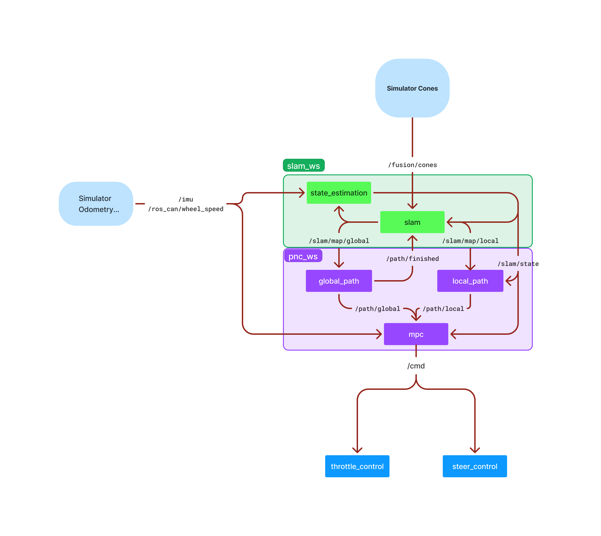

Pipeline 131 documentation
Welcome to the Formula Electric at Berkeley Pipeline 131 Mk.S documentation! This site is meant to document our codebase that works on the Endinburgh University Simulator
The event broadly consists of the car driving through a previously unseen track, made up of blue and yellow cones, with the blue cones indicating the left side of the track, and the yellow cones indicating the right side of the track.
Our code utilizes a ‘Discovery Lap’, where the car drives through the first lap carefully, and creates a global map of cones, while navigating on a local map and local path. Once the car finishes creating a global map, it creates the optimal global path through the entire track, and begins driving much much harder Since we don’t run perception, our pipeline on the simulator is more condensed, and consists of path-planning, localization, and control algorithms, depicted below:
One last important thing to note, is we use a Structured Concurrency program called ROS (Robot Operating System). More specifically, we use ROS2 Humble
Thank Yous:
This was a Massive project, that would not have been possible without our entire team working incredibly hard over the course of many years.
This documentation site was also inspired by CMU Racing, in an effort to assist other driverless teams in getting started.
A huge thank you to our sponsors (insert sponsors stuff).